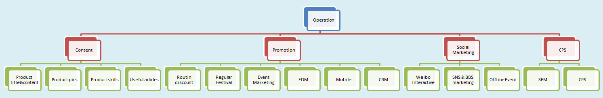
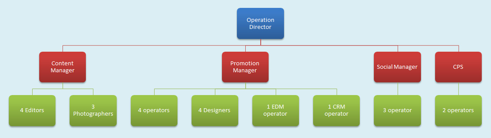

Other Elements: Images
<img src="http://placekitten.com/600/375" alt="Kitties">在现实世界的商店最有力的武器就是地段，地段，地段；而对于网上经营来说最重要的是技术，技术，技术。
亚马逊掌门人杰夫·贝佐斯 Jeff Bezos


That last slide had a few steps. To create substeps in slides, just nest them:
<section class="slide">
<h2>Extensions</h2>
<p>Core gives you basic slide functionality...</p>
<ul>
<li class="slide">
<h3>deck.goto</h3>
<p>Adds a shortcut key to jump to any slide number...</p>
</li>
<li class="slide">...</li>
<li class="slide">...</li>
<li class="slide">...</li>
</ul>
</section><img src="http://placekitten.com/600/375" alt="Kitties">Embed videos from your favorite online video service or with an HTML5 video element.
<iframe src="http://player.vimeo.com/video/1063136?title=0&byline=0&portrait=0" width="400" height="225" frameborder="0"></iframe>If you want to learn about making your own themes, extending deck.js, and more, check out the documentation.
/
#